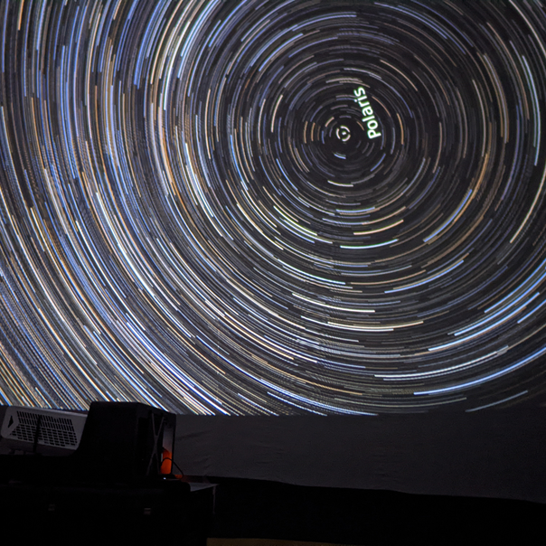
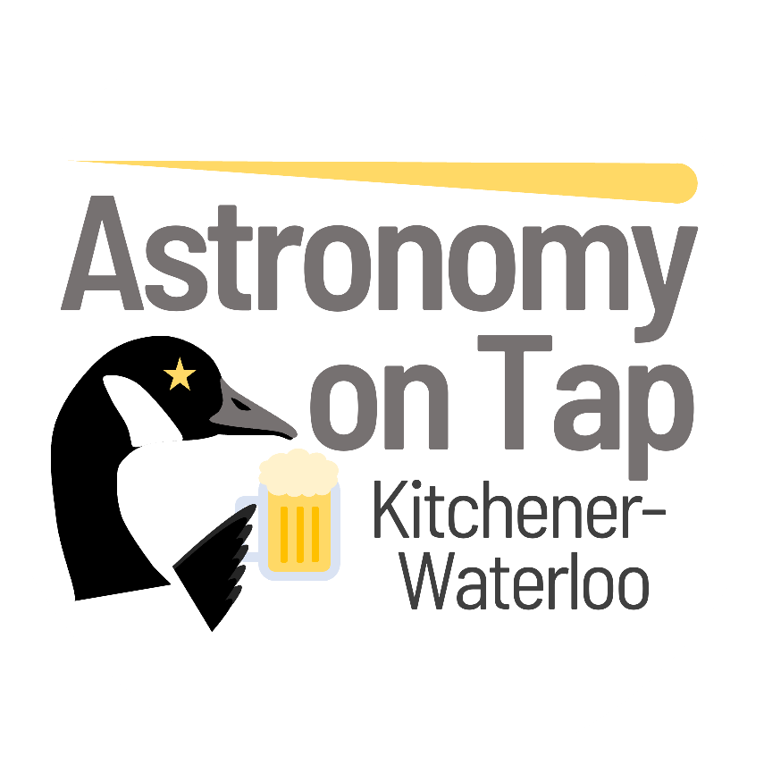
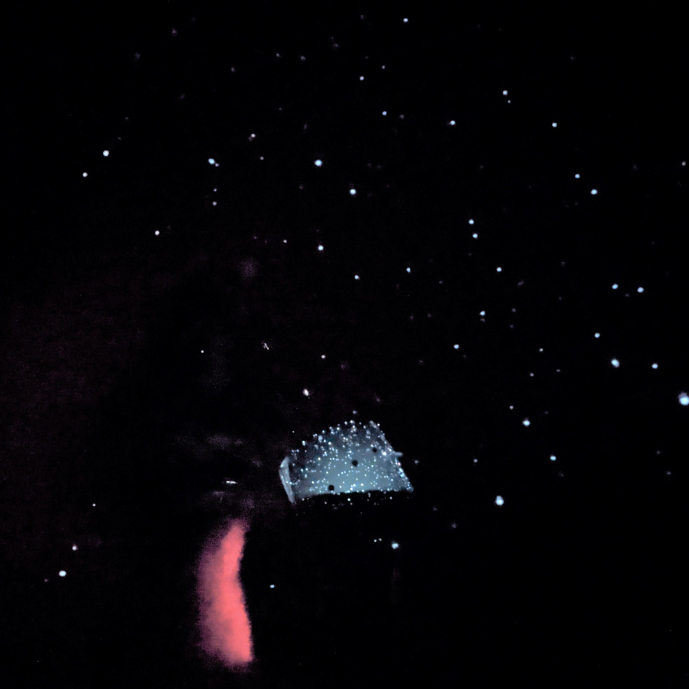
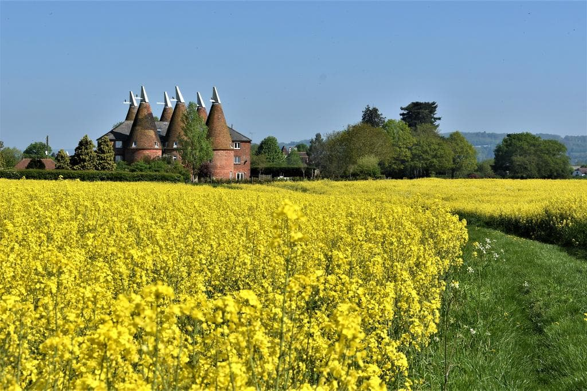

Publications
21 peer-reviewed publications | 5 as first author | NASA/ADS link
View full publication list on ADS →
Academic Talks
Conference Talks
Talks at Academic Institutions
Posters & Other Presentations
Science Outreach
Click for more details

Astro-Bubble
I oversee the Astro-Bubble programme in the Waterloo Centre for Astrophysics, organising visits with this portable planetarium to local schools, summer camps and Guides/Scouts groups. I also design other astronomy-related activities to support the planetarium, on topics like planets, galaxy evolution, and solar eclipses.

Astronomy on Tap
Astronomy on Tap is a series of monthly events that take place worldwide in bars and pubs, designed to share astronomy in a fun, relaxed, informal environment. I run the Kitchener-Waterloo branch of Astronomy on Tap, organising regular public astronomy nights with guest speakers.
WCA-KPL Talks
I also founded and oversee the monthly WCA-KPL seminar series, organised by the Waterloo Centre for Astrophysics and hosted at Kitchener Public Library. These public talks aim to share the world-leading research taking place in Waterloo with the local community, in a free and accessible way.
Astrobites
From 2021 to 2023 I was a regular contributing author for Astrobites, an online journal that publishes short articles summarising contemporary astronomy research in accessible language. In 2021 I also represented Astrobites at the National Astronomy Meeting, where I presented a poster promoting the work of Astrobites.You can find a full list of my articles here.

Inflativerse
For three years during my PhD I co-managed the University of Nottingham's Inflativerse planetarium, running visits to local schools, with a particular focus on those in underprivileged areas of Nottingham. I also helped to develop a new range of astronomy-based activities when in-person planetarium shows were not possible, which subsequently allowed us to permanently expand this outreach programme.
I'm a Scientist
I'm a Scientist is an online outreach activity that runs several times a year, and puts school students in contact with scientists, giving them the opportunity to ask questions about science and higher education. I participated in the scheme on multiple occasions during my PhD studies.
Public Talks
Media Appearances
About Me

I was born and grew up in Kent, UK, known as the 'Garden of England' because of its lovely countryside (see picture). I studied at Durham University (MPhys, 2018) and the University of Nottingham (PhD, 2022), and since 2022 have been a Postdoctoral Fellow at the University of Waterloo.
My research mainly focuses on simulations of galaxy clusters. I am particularly interested in cluster dynamics, the evolution of infalling galaxies and groups, and connecting these to large-scale structure and galaxy evolution. I am involved with The Three Hundred project, a large catalogue of galaxy clusters, simulated with multiple physics models.
Outside of astronomy, I spend my time rock climbing (mostly indoors) and listening to music (mostly from the 1990s), so please talk to me about either of these! I also have a strong interest in science outreach; I lead the public outreach efforts from the Waterloo Centre for Astrophysics, regularly communicating astrophysics to the public through talks, writing, and media appearances.
Image credit: 'Oast houses in the Kent countryside' (MelaQuin, Deviant Art)
Get in Touch
Waterloo Centre for Astrophysics
University of Waterloo
Waterloo, Ontario, Canada